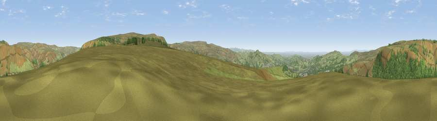

Viewpoint near Padfield
#8793 in England · top 11% of its area beats it · near PadfieldWhere it is
The exact computed spot (SK 05350 97375). Click the marker for map links.
The view, rendered

A 360° render of this exact spot computed from the terrain model, tree cover and land cover — summer colours, afternoon light, calibrated against photographs of famous viewpoints. Real trees, hedges and buildings will differ in detail.
The panorama
Grey silhouette: terrain skyline in each direction (720 bearings, Earth curvature and refraction included). Dashed green: skyline with trees (+15 m) and buildings (+8 m) as obstacles. Blue strip: how far the ground is visible on each bearing.
Where the view opens
Wedge length = distance to the farthest visible ground on that bearing (vegetation-aware). Rings at 10, 25 and 50 km.
What fills the view
62% grassland · 36% woodland ·
Angular shares of the visible panorama (visual magnitude), not map area. Landscape diversity 0.33 (0–1 Shannon).
Key numbers
More beautiful places nearby
The staircase of upgrades: each row has a higher view potential than everything closer. Driving times are estimates from straight-line distance, calibrated against real road routing — check an actual route before setting out.
| Place | Direction | Drive | Score |
|---|---|---|---|
| Viewpoint near Tintwistle | NW · 2 km | ~6 min | 67.8 |
| Wild Bank | W · 7 km | ~14 min | 76.2 |
| Viewpoint near Carrbrook | WNW · 7 km | ~14 min | 77.1 |
| Viewpoint near Edenfield | NW · 31 km | ~49 min | 77.5 |
| White Brow | WNW · 42 km | ~62 min | 82.9 |
| Warton Crag | NW · 94 km | ~118 min | 83.2 |
| Viewpoint near Little Wenlock | SSW · 98 km | ~123 min | 84.2 |
| The Wrekin | SSW · 99 km | ~123 min | 85.0 |
53.47308, -1.92087 · source: screening · position refined by local search. Computed location — check access rights before visiting.